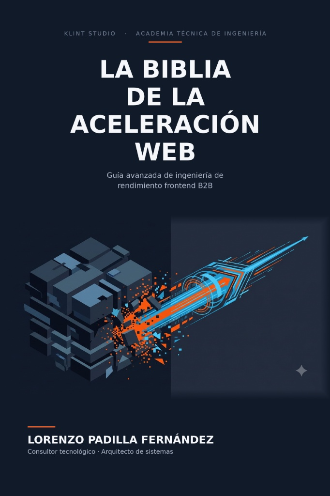

Guía avanzada de ingeniería de rendimiento frontend B2B.
Deja de justificar el software ineficiente. Diseña pensando en el silicio, domina el renderizado crítico en la frontera de la red y reduce el Largest Contentful Paint (LCP) un 60% aplicando estrategias de arquitectura sin hidratación listas para producción.
Entrega inmediata en PDF y ePUB. Garantía de reembolso de 7 días. ⚠️ Promoción de IVA bonificado limitada a las primeras 25 unidades.

Rendimiento medible, retorno garantizado
Un recorrido estructurado y sin rodeos teóricos. Del silicio y el CPU del cliente al enrutamiento físico y compresión en la frontera de la red.
Entiende los límites físicos de la CPU del usuario. Analizamos la hipertrofia del software moderno y por qué la hidratación se ha convertido en un impuesto insostenible para el silicio móvil.
Optimiza la ruta de renderizado visual del navegador. Controla al milisegundo el Largest Contentful Paint (LCP) y anula por completo el Cumulative Layout Shift (CLS).
Distribuye tu interfaz lo más cerca posible del cliente físico. Minimiza el handshake de conexión e implementa caching avanzado sin sacrificar consistencia de datos.
Automatiza la optimización visual de forma industrial. Convierte, escala e inyecta layouts adaptativos directamente en el flujo de integración de tu equipo.
Supera las ineficiencias clásicas de TCP. Comprendemos la multiplexación nativa y cómo exprimir HTTP/3 y el protocolo QUIC sobre conexiones inalámbricas hostiles.
Diseña arquitecturas en el Edge con la mínima latencia. Olvídate del serverless tradicional lento e implementa middleware ligero en V8 Isolates.
Auditoría en 10 min para CTOs, Casos de Negocio, Glosario Completo y plantillas de configuración.
No enseñamos HTML o los rudimentos de JavaScript. Este manual está diseñado para ingenieros senior y líderes técnicos que necesitan maximizar conversiones y optimizar costes de sistemas.
Diseña arquitecturas desacopladas, estables y limpias. Aprende a justificar decisiones técnicas basándote en la eficiencia computacional y a evitar la sobrecarga masiva de frameworks.
Instaura presupuestos de rendimiento (Performance Budgets) objetivos en el pipeline de CI/CD. Aprende a calcular el ROI real de la velocidad y a recortar drásticamente los costes de cómputo en la nube.
Escribe código que interactúe perfectamente con los motores V8 de los navegadores. Domina las entrañas de los hilos de ejecución, la carga asíncrona de recursos y el renderizado optimizado por hardware GPU.
Lorenzo Padilla Fernández es consultor tecnológico y arquitecto de sistemas con una trayectoria profesional de más de tres décadas. Su recorrido nace en el sector industrial, la ingeniería de automatización y la gestión de proyectos técnicos complejos de alta exigencia.
De esta experiencia procede su enfoque del software, aplicando los principios de la optimización industrial al desarrollo web: eliminar ineficiencias de forma sistemática, exprimir al máximo el hardware disponible y diseñar estructuras limpias, seguras y altamente escalables.
Es fundador y director de Klint Studio, estudio tecnológico especializado en desarrollo web de alto rendimiento, y de Prospectalia B2B, consultora de inteligencia comercial automatizada. Ambos proyectos descartan gestores de contenido inflados y concentran su ingeniería en arquitecturas nativas, rápidas y eficientes pensadas para optimizar el consumo de CPU.
Consigue acceso inmediato a La Biblia de la Aceleración Web en formatos PDF y ePUB. Incluye todas las futuras actualizaciones gratuitas de por vida.
⚠️ Limitado a las primeras 25 unidades (Quedan pocas)
Comprar ahora en HotmartEstá escrito para ingenieros frontend senior, arquitectos de software, tech leads y directores de tecnología (CTOs) que trabajan en entornos B2B o SaaS donde el rendimiento y la optimización de costes influyen directamente en la conversión y la retención del cliente empresarial. No es un manual introductorio de desarrollo web.
La compra incluye la descarga inmediata de dos archivos optimizados electrónicamente: una versión PDF de alta fidelidad maquetada cuidadosamente para lectura en pantallas, y una versión ePUB responsive para lectores de libros electrónicos clásicos y dispositivos móviles.
Si el contenido no aporta valor a tu flujo de trabajo o no descubres ninguna técnica avanzada nueva durante los primeros 7 días posteriores a tu compra, puedes solicitar la devolución completa y directa de tu dinero a través de la plataforma segura de Hotmart. Sin preguntas ni cuestionamientos.
Sí. El ecosistema web evoluciona de manera continua. Cuando publiquemos revisiones con nuevos estándares, optimizaciones y análisis de casos reales, recibirás un enlace de descarga directa en tu correo registrado de forma completamente gratuita.